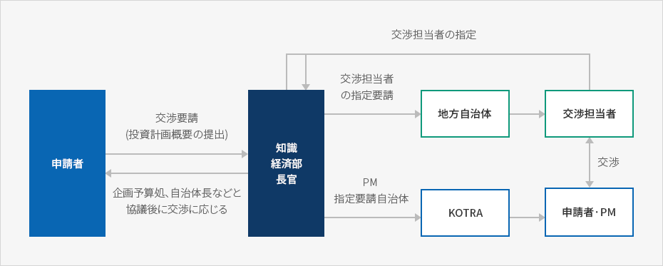
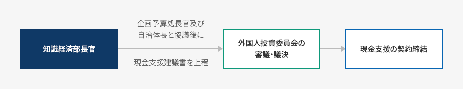

現金支援
- Home
- 投資ガイド
- 投資インセンティブ
- 現金支援
現金支援
政府と地方自治体は一定の要件を満たす外国人投資に対し、当該の外国人投資の高度な技術を伴う事業の可否及び技術移転効果、雇用創出規模、国内投資との重複可否、立地地域の適正性等を考慮し、工場施設の新築等に必要な資金を現金で支援しています。現金支援の対象及び用途
支援対象
現金支援の対象は外国人投資比率が30%以上の外国人投資であって、次の条件を満たさなければなりません。
- 外国人投資額が1千万ドル以上の産業支援サービス業, 高度な技術を伴う事業、部品·素材製造業のグリーンフィールド型投資(工場施設の新·増設)
- 産業支援サービス業及び高度技術を伴う事業と関連する分野のR&D研究施設又は外国人が非営利R&D法人に出捐した研究施設の新·増設(研究専門担当人材の常時雇用人数が10人以上であること)/li>
- 投資金額等の基準を満たしてはいないものの、国内経済に及ぼす効果が大きい場合は、外国人投資委員会の審議を経て現金支援が可能
- 多国籍企業の地域本部を設立する場合 (3カ国以上の地域に営業実体を有する多国籍企業が２カ国以上の地域を管轄する場合)
- 地域戦略産業であって地域経済発展に寄与した場合
- 国内で生産できない品目やサービスを供給したり、先進技術の導入などを通じて国内産業の競争力を高めることが出来る場合
支援率
- 現金支援率は協議を経て最小外国人投資金額(FDI)5%以上を支援し、上限ラインは非公開算式によって決定します。
法定使用用途
外国人投資企業が受けた現金支援金は次の用途のみに使用しなければなりません。
- 雇用及び教育訓練の補助金
- 土地購入·賃貸料
- 建築費
- 基盤施設の設置費
- 資本財·研究機資材の購入費
この場合、外国人投資企業に対する賃貸土地購入費は現金支援限度に含まれ、現金支援を受けると既存の立地支援制度(外国人投資金額の50%以内)による賃貸土地の提供または分譲額の差額補助を受けることが出来ません。(選択事項)
現金支援の申請手続き
1) 交渉及び支援申請·評価
現金支援を受けようとする外国人は産業資源部長官に申請書及び投資計画書を提出し、関連公務員及び民間専門家で構成された評価チームが申請書及び投資計画書を評価し、その評価結果報告書を産業部長官に提出します。
申請書の提出前にも産業資源部長官に対して交渉要請を行う事は可能ですが、この場合投資者は事前協議を通して支援可能性·支援金などについて把握することが出来るので、事実上、事前交渉が正式な協議手続きよりも重要であると言えます。
現金支援の評価基準
- 高度な技術を伴う産業及び技術移転の効果
- 国内投資と重複するかどうか
- 地域·国家経済への波及効果
- プロジェクトの存続可能性
- 雇用創出規模
- 立地の適正性
交渉及び支援申請·評価



2) 支援決定及び契約締結
外国人投資委員会の審議·議決により現金支援の決定が可能となり(支援金が10億ウォン未満の場合)、同決定により申請人と産業資源部長官及び地方自治体の長が現金支援契約を締結すると現金支援が行われます。この場合、契約期間は支援金を最後に支給した日から10年とし、契約内容は支援金支給方法、賃貸用地の取得・賃貸、支援金事後管理等で構成されます。現金支援の申請書から契約締結までは60日を超過することができません。
支援決定及び契約締結


3) 現金支援金の支給
支援金は現金支援が決定された日に一括で支払うか、5年以内で10回までの分割で支給されます。分割支給時には、支援金の範囲内で投資支出計画の履行実績又は支援金の執行実績等を評価した後、次の通り支給します。(金額及び時期は調整可能)
現金支援金の支給方法
| 支給項目 | 支給方法 | |
|---|---|---|
| 土地購入費 | 売買契約の締結後、中途金又は最終残金として分割支給 | |
| 賃貸料 | 申請人と賃貸される土地の所有者間の賃貸借契約に基づき支給 | |
| 工場·研究施設の建築費 | 投資支出計画の履行実績を評価して支給 | |
| 工場·研究施設のうち、事業用又は研究用に使用する資本財及び研究資機材の購入費 | ||
| 工場·研究施設新築に必要な 電気·通信施設等の 基盤施設設置費 | ||
| 教育訓練補助金 | 外国人投資企業登録後5年間支援し、費用を支出した年の翌年度初めに支給 | 内国人20人以上の教育訓練時、訓練人員1人当り100万ウォン以下を6ヶ月の範囲内で支援 |
| 雇用補助金 | 内国人20人以上の新規雇用時に超過雇用1人当り100万ウォン 以下を6ヶ月の範囲内で支援。但し、理工系の技術インターンを採用する場合には雇用人数と関係なく50万ウォン以下を12ヶ月の範囲内で支援 | |
事前審査制度
事前審査制度は国民の経済的な効果が大きいと予想される特定の外国人投資を積極的に誘致するため、Invest KOREA(KOTRA)が予めプロジェクトを評価し、産業資源部長官に対し外国人投資委員会への上程を建議し、そこで現金支援の可否を決定する積極的な企画投資誘致の運営方式です。支援申請を受けて評価を行う既存の方式と二元運営され、この場合、現金支援の可否は申請書の受付の前に決定されます。
Invest KOREA(KOTRA)は現金支援により投資誘致を推進する候補プロジェクトに対して、専門家の事前検討を経て協議案を作成し産業資源部長官に外国人投資委員会への上程を建議します。これに関し、外国人投資委員会は審議を通じて現金支援の可否及び限度を決定しますが、審議後1年以内の承認を受けた範囲内で投資家との交渉を進めます。交渉の妥結以降、契約手続き及び事後管理等は以前の方式と同様に行われます。万一、期間内に投資誘致が完了されなかった場合は産業資源部長官が関連技術の国内導入及び開発現況等を勘案し、1年の限度内でその期間を延長する事が出来ます。
現金支援の事後管理
申請人の責務
申請人は直接又は間接的に当該の外国人投資企業を管理し、現金支援契約上の義務と投資支出計画を誠実に履行しなければなりません。
建物、施設及び装備等全ての資産(工事中の資産含む)に対し十分な復旧と交替が行われるよう損害賠償保険加入、又はこれに相応する措置をとらなければならず、現金支援を受ける資産取得のための契約は公開入札、公認鑑定評価、2つ以上の見積書の検討等、現金支援金が効率的に使用出来るような方法で締結しなければなりません。
現金支援を受けた資産を当該の事業以外の目的に使用したり、譲渡·交換·貸与、又は担保に提供する場合には、産業資源部長官による事前の書面同意が必要です。また、現金支援金の配当及びロイヤリティー等への流出は禁じられており、当該外国人投資企業は事業以外の目的での債務保証は出来ません。
申請人は契約期間中の契約の履行を検討する十分な情報を提供し、外部監査を受けた決算報告書を毎年産業資源部長官に提出しなければなりません。
現金支援金の管理
土地購入費、賃貸料の用途で国家及び地方自治体から支援を受けて購入した用地は、分譲契約後5年以内は処分出来ません。また、契約後10年以内に処分する場合には売却代金のうち国家及び地方自治体の支援比率に該当する金額は還収されます。
教育訓練及び雇用補助金用途の現金支援に対しては当該の補助金支給対象勤労者を3年以上雇用しなくてはならず、3年以内に解雇した場合には、期間に応じて補助金を追徴します。(但し、理工系インターンは除く）
建築費、施設装備購入費、基盤施設設置費用途の支援金と関連し、現金支援契約書に明示された外国人投資金額より実際の外国人投資金額が少ない場合、該当比率に応じて現金支援金額から減額調整します。
現金支援の取消、撤回、減額、還収等
虚偽·不当な方法による申請、契約上の義務不履行、契約期間中の不渡り等により事業継続が不可能となった場合、現金支援を取消、撤回したり、支援金を減額、還収する等の措置を取る事があります。まず、契約履行を促し、又は疏明の機会を与えた後、実務委員会の審議· 議決を経て、該当現金支援の契約及び支援金に対する措置が決定されます。
契約期間中の不渡り等により事業継続が不可能な場合、申請人から現金支援金の返還に代えて契約期間の延長の求めがあれば、特別な事情のない限り期間延長を許容し、返還すべき金額は次のうち大きいものとします。この場合の現金支援金の返還義務は、外国人投資家又は外国人投資企業がそれぞれ、又は共同で負担します。
- 投資支出計画履行前に事業を営む事が出来なくなった場合は、支給した現金支援金の全額
- 投資支出計画履行後に事業を営む事が出来なくなった場合は、契約で約定した事業営為期間に満たない1ヶ月につき現金支援支給額の1/60(最大60/60)ずつを加算した金額
- 契約期間中に約定した最小雇用義務を履行出来なかった場合、雇用出来なかった人員1人につき契約で約定した違約金を乗じた金額(事業期間延長を通じて最小雇用義務の履行可能)